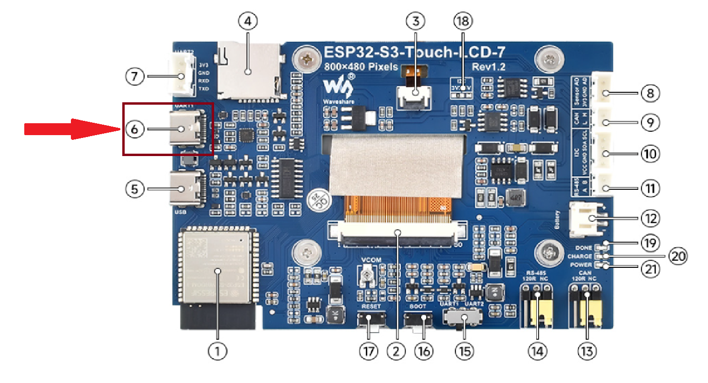

Step 0: Use a PC or Mac to open this webpage.
Step 1: Connect to UART1 USB (6) Port
Step 2: Click Connect above
Step 67: Enjoy!
Step ??: If stuck, reboot computer, close Arduino IDE.
Step ??: If still stuck, hold BOOT button on the back (16) while flashing.
